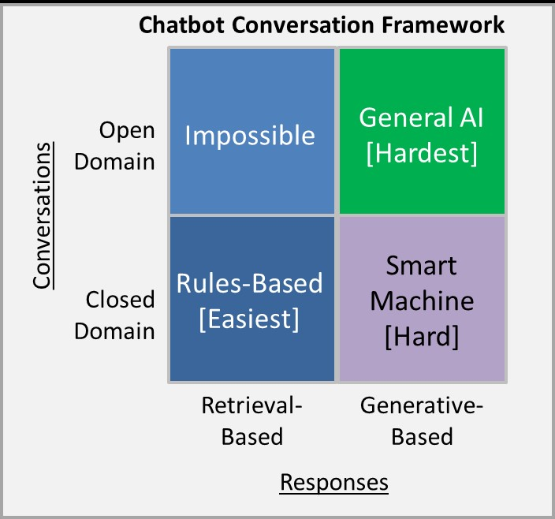
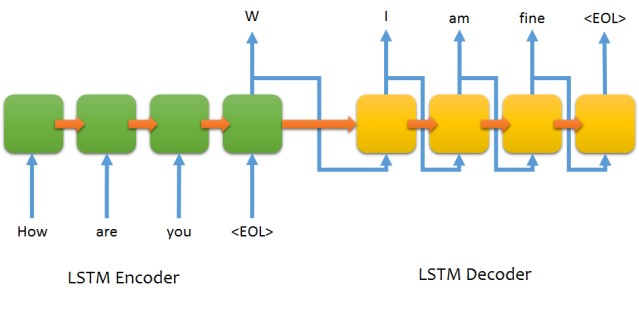
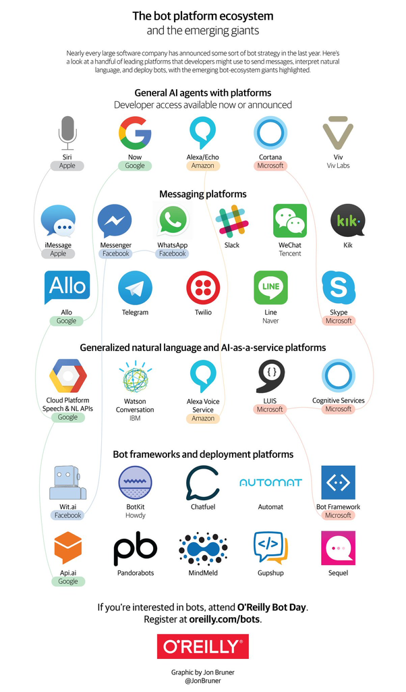
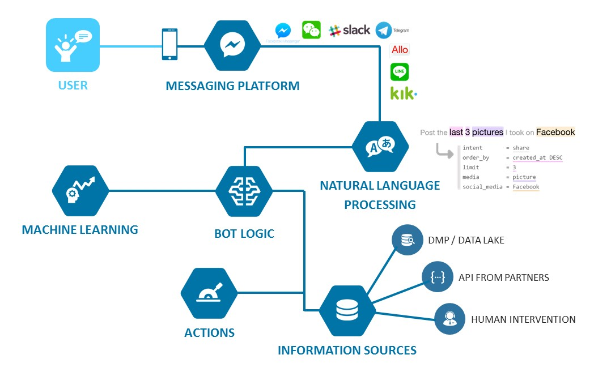
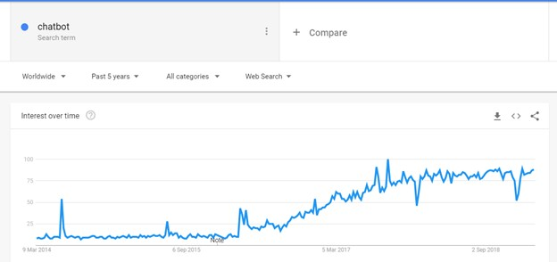
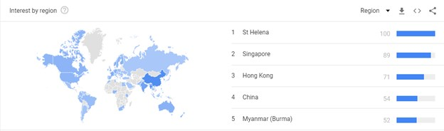
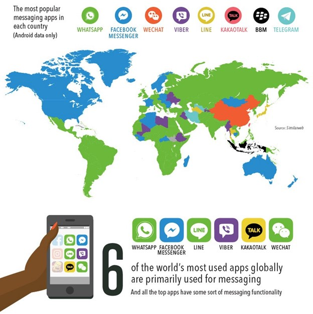

LE HOANG KHOI
Suivi Cambridge Dictionnaire:
"A computer program designed to have a conversation with a human being, especially over the internet ""
Simplement, nous considérons chatbot comme un logiciel pouvant communiquer avec humain par langage naturel via un interface, voix ou texte.
Mais il faut noter que la capacité de chatbot maintenant est limité par rapport la technique aujourd’hui. « Limité » c’est-à-dire pas comme entre humain avec humain. Des science-fiction toujours nous ment avec des parfait chatbot comme Jarvis en Ironman ou Skynet. Nous parlons en détail sur limite ci- dessous.
Example réel :
Siri Cortana Sephora Dominos PizzaSuivi le model de réalisation, nous avons 2 modèles principaux servi à de domaine spécifique

Retrieval-based modelVia des réponds déjà prédéfini avant et la façon de trouver de bonne réponds sur input et contexte. La façon peut être correspondance d'expression basée sur des règles ou ensemble des Machine Learning classification
Donc, ça donne davantage avec aucun problème de grammaire et facile à réaliser, et non besoin de large data pour entrainer le chatbot. Mais avec hard-code, l’intelligent de ce type de chatbot est 0 et la capacite de répondre à nouveau question est impossible. Donc, le domaine ferme est adapté par ce type de chatbot.
Generative modelsDiffèrent avec Retrieval-based model, ce modèle base sur la machine learning technique. Seq2Seq est le modèle pour générer de texte comme de façon que nous faisons la traduction technique. Sauf ici notre output est une réponse. Et le modèle populaire est LSTM Encoder avec LSTM Decoder.

Ce modèle nous donne des points fort par des réponses générées créative non -dépendant sur des réponses prédéfinies. Nous ne pouvons pas construire des règles pour forcer notre modèle à suivre. Mais des difficultés de réaliser des modèles et la capacite d’adapte sur la question avec les réponses exactes sont des points faibles.
En hors, sur 2 modèle, deep learning technique peut appliquer à les deux. Mais la recherche maintenant a de tendance sur des générative modèle. Nous sommes juste au début d’époque.
En bref, sur modèle, de chatbot est adapter pour la vie industrielle maintenant c’est la Retrieval-based model et Generative models est notre futur. Nous attendons d’évolution de chatbot sur le domaine ouvert dans près futur.
Suivi l’évolution d’application de message, nous comptons seulement sur des platform de message qui va nous aider à construire un chatbot, c’est énorme. Dépendant à notre conversation, notre système, notre business et notre capacite économique, nous pouvons choisir un modèle plus adaptable.

Cliquez ici pour voir notre application XML
Ce schéma décrive en détail comment un système de chatbot marche ? Au début, l’utilisateur interagi avec platform de message et envoie des info besoin d’être traité. Après, le message est reçu bien par le système NLP. Ici, des infos d’utilisateur est analysé. Souvent, le système récupère de intent (verbe exprimer d’action) et des entité (objet affecte par cet action). La façon d’améliorer de système de base de chatbot et prédéfini plus de intent pour faciliter à reconnaitre le besoin du client. Après avoir le besoin de client, dépendant le contexte et le système que nous avons, l’action ou message ou une intervention d’humain va réaliser et envoyer à client. Chaque message reçu, chaque fois notre chatbot évolué suivi l’apprentissages atomisée par cas, ou par info que nous ajoutons à notre chatbot.
Suivi info de google, chatbot est encore chaud dans cette année. Notamment sur pays Asiatique. La population en haut et le service de client manquant avec de nombre de vendor sont la raison pour le besoin de chatbot. L’amélioration de relation avec client, et maximiser la capacite de communiquer avec client sont de principe.


L’évolution d’application message donne de grande opportunité à chatbot. Aujourd’hui, les 6 application plus utilisée dans le monde est application de message. L’utilisateurs d’application est la grande ressource de client potentiel à approcher par distributeur. De plus en plus, chatbot sur ce platform est creé chaque jour.

Suivi le sondage ci-dessous, les bénéficié du chatbot est connu par intergénération. Ici c’est l’idée de millénial et baby boomer. Nous pouvons voir que des idées est près que similaire entre 2 génération. Donc, l’acceptance d’utilisation de chatbot est favorable au besoin réel.